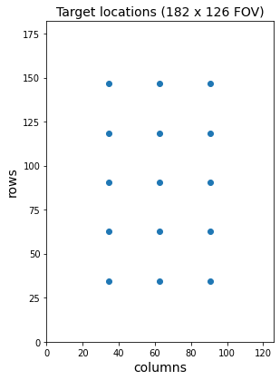
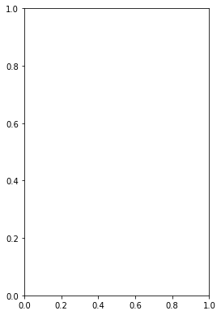
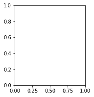
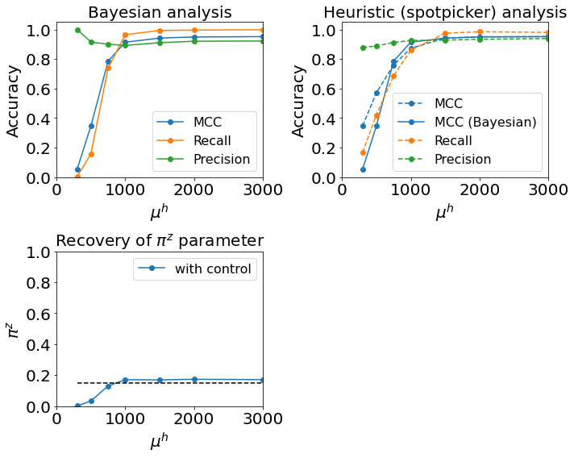
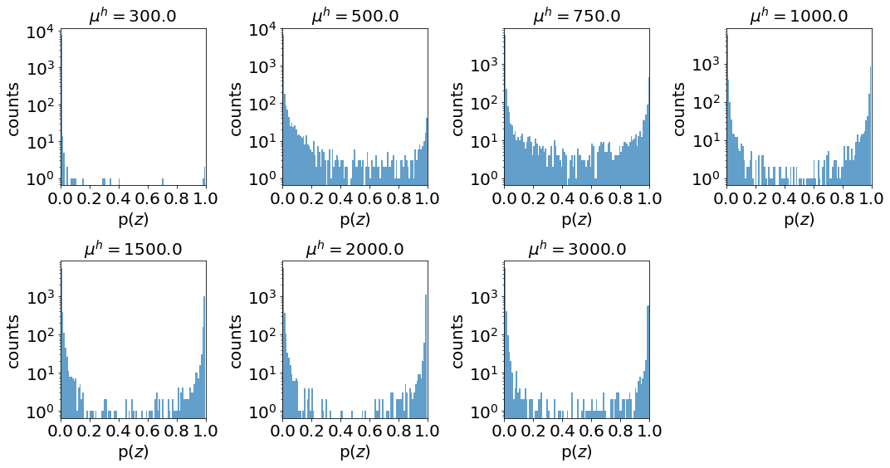
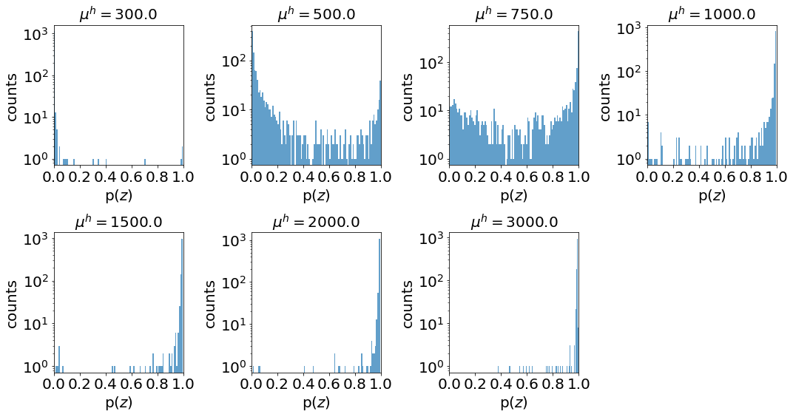

Height data¶
[1]:
import torch
import pyro
import pyro.distributions as dist
from cosmos.models import Tracker
import numpy as np
import pandas as pd
import os
import matplotlib.pyplot as plt
[2]:
from cosmos.models.utils import pi_m_calc, pi_theta_calc, theta_trans_calc
from cosmos.utils.glimpse_reader import read_glimpse, CoSMoSDataset
[3]:
import pyro.poutine as poutine
from pyro.infer import infer_discrete
from sklearn.metrics import matthews_corrcoef
from pyro.ops.indexing import Vindex
from scipy.io import savemat
#plt.rc('text', usetex=True)
[4]:
from sklearn.metrics import matthews_corrcoef, confusion_matrix, \
precision_score, recall_score, \
roc_curve
from scipy.io import loadmat
[5]:
class GaussianSpot():
def __init__(self, target, drift, X, Y):
# create meshgrid of DxD pixel positions
i_pixel, j_pixel = torch.meshgrid(
torch.arange(X), torch.arange(Y))
self.ij_pixel = torch.stack((i_pixel, j_pixel), dim=-1).float()
# drift locs for 2D gaussian spot
self.target_locs = torch.tensor(
drift[["dx", "dy"]].values.reshape(-1, 2)
+ target[["x", "y"]].values.reshape(-1, 1, 2)) \
.float()
# Ideal 2D gaussian spots
def forward(self, height, width, x, y, n_idx, m_mask=None, f=None):
if m_mask is not None:
height = height.masked_fill(~m_mask, 0.)
if f is not None:
spot_locs = self.target_locs[n_idx, f] + torch.stack((x, y), dim=-1)
else:
spot_locs = self.target_locs[n_idx] + torch.stack((x, y), dim=-1)
rv = dist.MultivariateNormal(
spot_locs[..., None, None, :],
scale_tril=torch.eye(2) * width[..., None, None, None, None])
gaussian_spot = torch.exp(rv.log_prob(self.ij_pixel)) # N,F,D,D
return (height[..., None, None] * gaussian_spot).sum(dim=(0,1))
Time Independent FOV¶
[6]:
N = 15 # number of AOIs
D = 14 # AOI size
F = 500 # number of frames
[7]:
# target locations
X, Y = np.meshgrid(np.arange(5)*D*2+2*D+(D-1)/2, np.arange(3)*D*2+2*D+(D-1)/2)
target = pd.DataFrame(data={"x": X.flatten(), "y": Y.flatten()}, index=np.arange(N))
target.index.name = "aoi"
drift = pd.DataFrame(data={"dx": 0., "dy": 0.}, index=np.arange(F))
drift.index.name = "frame"
[8]:
plt.figure(figsize=(9/2,13/2))
plt.scatter(Y, X)
plt.xlim(0, 28*5-14)
plt.ylim(0, 28*7-14)
plt.ylabel("rows", fontsize=14)
plt.xlabel("columns", fontsize=14)
plt.title("Target locations (182 x 126 FOV)", fontsize=14)
plt.show()

[9]:
loc = GaussianSpot(target, drift, 2*D*7-14, 2*D*5-14)
[10]:
def pi_m_calc(lamda, S):
pi_m = torch.eye(S+1)
pi_m[0] = lamda
return pi_m
[11]:
sim = "height"
heights = ["0300", "0500", "0750", "1000", "1500", "2000", "3000"]
#heights = ["0300", "0500"]
pi_z = "15"
lamda_j = "15"
sigma = "0.2"
[13]:
"""
for h in heights:
pyro.set_rng_seed(0)
# simulation parameters
gain = torch.tensor([7.])
offset = torch.tensor([90.])
background = torch.tensor([150.])
pi = torch.tensor([1-float(pi_z)/100, float(pi_z)/100])
lamda = torch.tensor([1-float(lamda_j)/100, float(lamda_j)/100]) # 0.2 / AOI
pi_m = pi_m_calc(lamda, 1)
pi_theta = pi_theta_calc(pi, 2, 1)
h_loc = torch.tensor([1., float(h)])
h_beta = torch.tensor([0.01, 0.01])
w_mode = torch.tensor([1.4])
w_size = torch.tensor([100.])
size = torch.tensor([2., (((D+1) / (2*float(sigma))) ** 2 - 1)])
m_matrix = torch.tensor([[0, 0], [1, 0], [0, 1]]).T.reshape(2, 1, 1, 3)
theta_matrix = torch.tensor([[0, 0], [1, 0], [0, 1]]).T.reshape(2, 1, 1, 3)
with pyro.plate("F", F, dim=-1):
with pyro.plate("N", N, dim=-2):
theta = pyro.sample("theta", dist.Categorical(pi_theta))
theta_mask = Vindex(theta_matrix)[..., theta]
m_mask = Vindex(m_matrix)[..., theta]
with pyro.plate("K", 2, dim=-3):
m_mask = pyro.sample("m", dist.Categorical(Vindex(pi_m)[m_mask]))
#height = pyro.sample("height", dist.Gamma(h_loc[m_mask] * h_beta[m_mask], h_beta[m_mask]))
height = pyro.sample("height", dist.Gamma(100., 0.1))
width = pyro.sample("width", ScaledBeta(w_mode, w_size, 0.5, 2.5))
x = pyro.sample("x", ScaledBeta(0, size[theta_mask], -(D+1)/2, D+1))
y = pyro.sample("y", ScaledBeta(0, size[theta_mask], -(D+1)/2, D+1))
height = height.masked_fill(m_mask==0, 0.) * float(h) / 1000
width = width * 2.5 + 0.5
x = x * (D + 1) - (D + 1) / 2
y = y * (D + 1) - (D + 1) / 2
locs = loc.forward(height, width, x, y, torch.arange(N)) + background
#image = locs + junks + background
data = pyro.sample("data", CameraUnit(locs, gain, offset).to_event(2))
data = data.long()
labels = np.zeros((N, F), dtype=[("aoi", int), ("frame", int), ("z", bool)])
labels["aoi"] = np.arange(N).reshape(-1, 1)
labels["frame"] = np.arange(F)
labels["z"] = theta.squeeze() > 0
cosmos_data = torch.zeros(N, F, D, D)
cosmos_target = target.copy()
cosmos_drift = drift.copy()
with pyro.plate("F", F, dim=-1):
with pyro.plate("N", N, dim=-2):
theta = 0
theta_mask = Vindex(theta_matrix)[..., theta]
m_mask = Vindex(m_matrix)[..., theta]
with pyro.plate("K", 2, dim=-3):
m_mask = pyro.sample("m", dist.Categorical(Vindex(pi_m)[m_mask]))
#height = pyro.sample("height", dist.Gamma(h_loc[m_mask] * h_beta[m_mask], h_beta[m_mask]))
height = pyro.sample("height", dist.Gamma(100., 0.1))
width = pyro.sample("width", ScaledBeta(w_mode, w_size, 0.5, 2.5))
x = pyro.sample("x", ScaledBeta(0, size[theta_mask], -(D+1)/2, D+1))
y = pyro.sample("y", ScaledBeta(0, size[theta_mask], -(D+1)/2, D+1))
height = height.masked_fill(m_mask==0, 0.) * float(h) / 1000
width = width * 2.5 + 0.5
x = x * (D + 1) - (D + 1) / 2
y = y * (D + 1) - (D + 1) / 2
control_locs = loc.forward(height, width, x, y, torch.arange(N)) + background
#image = locs + junks + background
control_data = pyro.sample("data", CameraUnit(control_locs, gain, offset).to_event(2))
control_data = control_data.long()
control_labels = np.zeros((N, F), dtype=[("aoi", int), ("frame", int), ("z", bool)])
control_labels["aoi"] = np.arange(N).reshape(-1, 1)
control_labels["frame"] = np.arange(F)
control_cosmos_data = torch.zeros(N, F, D, D)
for i, frame in enumerate(drift.index):
for j, aoi in enumerate(target.index):
top_x = int((target.at[aoi, "x"] - (D-1) * 0.5) // 1
+ drift.at[frame, "dx"] // 1)
left_y = int((target.at[aoi, "y"] - (D-1) * 0.5) // 1
+ drift.at[frame, "dy"] // 1)
cosmos_data[j, i] = data[i, top_x:top_x+D, left_y:left_y+D]
control_cosmos_data[j, i] = control_data[i, top_x:top_x+D, left_y:left_y+D]
#print(top_x, left_y)
for j, aoi in enumerate(target.index):
cosmos_target.at[aoi, "x"] = target.at[aoi, "x"] - int((target.at[aoi, "x"] - (D-1) * 0.5) // 1)
cosmos_target.at[aoi, "y"] = target.at[aoi, "y"] - int((target.at[aoi, "y"] - (D-1) * 0.5) // 1)
dataset = CoSMoSDataset(cosmos_data, cosmos_target, cosmos_drift, labels, "test")
#dataset.save("{}_data/h{}pi{}lamda{}".format(sim, h, pi_z, lamda_j))
#savemat("{}_data/h{}pi{}lamda{}/h{}pi{}lamda{}.mat".format(sim, h, pi_z, lamda_j, h, pi_z, lamda_j), {"data": data.numpy(), "binary": labels["z"], "aoiinfo": loc.target_locs.numpy()})
control_dataset = CoSMoSDataset(control_cosmos_data, cosmos_target, cosmos_drift, control_labels, "control")
#control_dataset.save("{}_data/h{}pi{}lamda{}".format(sim, h, pi_z, lamda_j))
#savemat("{}_data/h{}pi{}lamda{}/control_h{}pi{}lamda{}.mat".format(sim, h, pi_z, lamda_j, h, pi_z, lamda_j), {"data": control_data.numpy(), "binary": control_labels["z"], "aoiinfo": loc.target_locs.numpy()})
"""
[13]:
'\nfor h in heights:\n pyro.set_rng_seed(0)\n\n # simulation parameters\n gain = torch.tensor([7.])\n offset = torch.tensor([90.])\n background = torch.tensor([150.])\n pi = torch.tensor([1-float(pi_z)/100, float(pi_z)/100])\n lamda = torch.tensor([1-float(lamda_j)/100, float(lamda_j)/100]) # 0.2 / AOI\n pi_m = pi_m_calc(lamda, 1)\n pi_theta = pi_theta_calc(pi, 2, 1)\n h_loc = torch.tensor([1., float(h)])\n h_beta = torch.tensor([0.01, 0.01])\n w_mode = torch.tensor([1.4])\n w_size = torch.tensor([100.])\n\n size = torch.tensor([2., (((D+1) / (2*float(sigma))) ** 2 - 1)])\n m_matrix = torch.tensor([[0, 0], [1, 0], [0, 1]]).T.reshape(2, 1, 1, 3)\n theta_matrix = torch.tensor([[0, 0], [1, 0], [0, 1]]).T.reshape(2, 1, 1, 3)\n\n with pyro.plate("F", F, dim=-1):\n with pyro.plate("N", N, dim=-2):\n theta = pyro.sample("theta", dist.Categorical(pi_theta))\n theta_mask = Vindex(theta_matrix)[..., theta]\n m_mask = Vindex(m_matrix)[..., theta]\n with pyro.plate("K", 2, dim=-3):\n m_mask = pyro.sample("m", dist.Categorical(Vindex(pi_m)[m_mask]))\n #height = pyro.sample("height", dist.Gamma(h_loc[m_mask] * h_beta[m_mask], h_beta[m_mask]))\n height = pyro.sample("height", dist.Gamma(100., 0.1))\n width = pyro.sample("width", ScaledBeta(w_mode, w_size, 0.5, 2.5))\n x = pyro.sample("x", ScaledBeta(0, size[theta_mask], -(D+1)/2, D+1))\n y = pyro.sample("y", ScaledBeta(0, size[theta_mask], -(D+1)/2, D+1))\n\n height = height.masked_fill(m_mask==0, 0.) * float(h) / 1000\n width = width * 2.5 + 0.5\n x = x * (D + 1) - (D + 1) / 2\n y = y * (D + 1) - (D + 1) / 2\n locs = loc.forward(height, width, x, y, torch.arange(N)) + background\n\n #image = locs + junks + background\n data = pyro.sample("data", CameraUnit(locs, gain, offset).to_event(2))\n \n data = data.long()\n labels = np.zeros((N, F), dtype=[("aoi", int), ("frame", int), ("z", bool)])\n labels["aoi"] = np.arange(N).reshape(-1, 1)\n labels["frame"] = np.arange(F)\n labels["z"] = theta.squeeze() > 0\n \n cosmos_data = torch.zeros(N, F, D, D)\n cosmos_target = target.copy()\n cosmos_drift = drift.copy()\n \n with pyro.plate("F", F, dim=-1):\n with pyro.plate("N", N, dim=-2):\n theta = 0\n theta_mask = Vindex(theta_matrix)[..., theta]\n m_mask = Vindex(m_matrix)[..., theta]\n with pyro.plate("K", 2, dim=-3):\n m_mask = pyro.sample("m", dist.Categorical(Vindex(pi_m)[m_mask]))\n #height = pyro.sample("height", dist.Gamma(h_loc[m_mask] * h_beta[m_mask], h_beta[m_mask]))\n height = pyro.sample("height", dist.Gamma(100., 0.1))\n width = pyro.sample("width", ScaledBeta(w_mode, w_size, 0.5, 2.5))\n x = pyro.sample("x", ScaledBeta(0, size[theta_mask], -(D+1)/2, D+1))\n y = pyro.sample("y", ScaledBeta(0, size[theta_mask], -(D+1)/2, D+1))\n\n height = height.masked_fill(m_mask==0, 0.) * float(h) / 1000\n width = width * 2.5 + 0.5\n x = x * (D + 1) - (D + 1) / 2\n y = y * (D + 1) - (D + 1) / 2\n control_locs = loc.forward(height, width, x, y, torch.arange(N)) + background\n\n #image = locs + junks + background\n control_data = pyro.sample("data", CameraUnit(control_locs, gain, offset).to_event(2))\n \n \n control_data = control_data.long()\n control_labels = np.zeros((N, F), dtype=[("aoi", int), ("frame", int), ("z", bool)])\n control_labels["aoi"] = np.arange(N).reshape(-1, 1)\n control_labels["frame"] = np.arange(F)\n \n control_cosmos_data = torch.zeros(N, F, D, D)\n\n for i, frame in enumerate(drift.index):\n for j, aoi in enumerate(target.index):\n top_x = int((target.at[aoi, "x"] - (D-1) * 0.5) // 1\n + drift.at[frame, "dx"] // 1)\n left_y = int((target.at[aoi, "y"] - (D-1) * 0.5) // 1\n + drift.at[frame, "dy"] // 1)\n cosmos_data[j, i] = data[i, top_x:top_x+D, left_y:left_y+D]\n control_cosmos_data[j, i] = control_data[i, top_x:top_x+D, left_y:left_y+D]\n #print(top_x, left_y)\n\n for j, aoi in enumerate(target.index):\n cosmos_target.at[aoi, "x"] = target.at[aoi, "x"] - int((target.at[aoi, "x"] - (D-1) * 0.5) // 1)\n cosmos_target.at[aoi, "y"] = target.at[aoi, "y"] - int((target.at[aoi, "y"] - (D-1) * 0.5) // 1)\n \n dataset = CoSMoSDataset(cosmos_data, cosmos_target, cosmos_drift, labels, "test")\n #dataset.save("{}_data/h{}pi{}lamda{}".format(sim, h, pi_z, lamda_j))\n #savemat("{}_data/h{}pi{}lamda{}/h{}pi{}lamda{}.mat".format(sim, h, pi_z, lamda_j, h, pi_z, lamda_j), {"data": data.numpy(), "binary": labels["z"], "aoiinfo": loc.target_locs.numpy()})\n\n control_dataset = CoSMoSDataset(control_cosmos_data, cosmos_target, cosmos_drift, control_labels, "control")\n #control_dataset.save("{}_data/h{}pi{}lamda{}".format(sim, h, pi_z, lamda_j))\n #savemat("{}_data/h{}pi{}lamda{}/control_h{}pi{}lamda{}.mat".format(sim, h, pi_z, lamda_j, h, pi_z, lamda_j), {"data": control_data.numpy(), "binary": control_labels["z"], "aoiinfo": loc.target_locs.numpy()})\n'
[14]:
frame = 15
plt.figure(figsize=(9,13/2))
plt.subplot(121)
plt.imshow(locs[frame].data, cmap="gray", vmin=data.min(), vmax=data.max())
plt.plot(Y, X, "C0+")
plt.subplot(122)
plt.imshow(data[frame].data, cmap="gray", vmin=data.min(), vmax=data.max())
plt.plot(Y, X, "C0+")
plt.show()
---------------------------------------------------------------------------
NameError Traceback (most recent call last)
<ipython-input-14-5d67e908be40> in <module>
3 plt.figure(figsize=(9,13/2))
4 plt.subplot(121)
----> 5 plt.imshow(locs[frame].data, cmap="gray", vmin=data.min(), vmax=data.max())
6 plt.plot(Y, X, "C0+")
7
NameError: name 'locs' is not defined

[15]:
plt.figure(figsize=(15,3))
for i in range(5):
plt.subplot(1,5,i+1)
plt.imshow(cosmos_data[0,i].data, vmin=data.min(), vmax=data.max(), cmap="gray")
plt.show()
---------------------------------------------------------------------------
NameError Traceback (most recent call last)
<ipython-input-15-9d076191dbf2> in <module>
2 for i in range(5):
3 plt.subplot(1,5,i+1)
----> 4 plt.imshow(cosmos_data[0,i].data, vmin=data.min(), vmax=data.max(), cmap="gray")
5 plt.show()
NameError: name 'cosmos_data' is not defined

[16]:
plt.imshow(cosmos_data.mean(dim=(0,1)), cmap="gray")
plt.show()
---------------------------------------------------------------------------
NameError Traceback (most recent call last)
<ipython-input-16-4ad7c588cc90> in <module>
----> 1 plt.imshow(cosmos_data.mean(dim=(0,1)), cmap="gray")
2 plt.show()
NameError: name 'cosmos_data' is not defined
[17]:
plt.figure(figsize=(15,3))
plt.plot(labels["z"][1], marker="o", ms=5, color="C3")
#plt.ylim(0,1)
plt.xlim(-1,501)
plt.xlabel(r"frame", fontsize=20)
#plt.ylabel(r"spot presence", fontsize=20)
plt.title(r"Binary spot presence", fontsize=20)
plt.gca().axes.get_yaxis().set_ticks(np.arange(2)*1)
plt.xticks(size=20)
plt.yticks(size=20)
plt.show()
---------------------------------------------------------------------------
NameError Traceback (most recent call last)
<ipython-input-17-38ee40f65297> in <module>
1 plt.figure(figsize=(15,3))
----> 2 plt.plot(labels["z"][1], marker="o", ms=5, color="C3")
3 #plt.ylim(0,1)
4 plt.xlim(-1,501)
5 plt.xlabel(r"frame", fontsize=20)
NameError: name 'labels' is not defined
<Figure size 1080x216 with 0 Axes>
Results¶
[18]:
names = ["0300", "0500", "0750", "1000", "1500", "2000", "3000"]
snr = [float(name) for name in names]
Tracker v1.1.3flat
[20]:
results = {}
predictions = {}
true_labels = {}
names = ["0300", "0500", "0750", "1000", "1500", "2000", "3000"]
for name in names:
results[name] = pd.read_csv(
"/shared/centaur/data/height_data/h{}pi{}lamda{}/runs/tracker/v1.1.3flat/S1/control/lr0.005/bs5/params_last.csv"
.format(name, pi_z, lamda_j),
header=None, squeeze=True, index_col=0)
predictions[name] = np.load(
"/shared/centaur/data/height_data/h{}pi{}lamda{}/runs/tracker/v1.1.3flat/S1/control/lr0.005/bs5/predictions.npy"
.format(name, pi_z, lamda_j))
true_labels[name] = np.load("/shared/centaur/data/height_data/h{}pi{}lamda{}/labels.npy"
.format(name, pi_z, lamda_j))
[21]:
scores_v1p13 = pd.DataFrame(data=results).T.drop(columns=[float("nan"), "pi_0", "lamda_0", "width_mode_0", "width_size_0"])
scores_v1p13
[21]:
| iter | -ELBO | gain | pi_1 | lamda_1 | MCC | Recall | Precision | FN | TP | TN | FP | |
|---|---|---|---|---|---|---|---|---|---|---|---|---|
| 0300 | 19900.0 | 14367738.0 | 7.049694 | 0.000943 | 0.000003 | 0.053758 | 0.003422 | 1.000000 | 1165.0 | 4.0 | 6331.0 | 0.0 |
| 0500 | 19900.0 | 14385291.0 | 7.089531 | 0.033164 | 0.000130 | 0.346409 | 0.156544 | 0.915000 | 986.0 | 183.0 | 6314.0 | 17.0 |
| 0750 | 27600.0 | 14409646.0 | 7.154151 | 0.130141 | 0.014876 | 0.785407 | 0.738238 | 0.899896 | 306.0 | 863.0 | 6235.0 | 96.0 |
| 1000 | 19900.0 | 14422989.0 | 7.122874 | 0.170072 | 0.057632 | 0.913743 | 0.964927 | 0.891700 | 41.0 | 1128.0 | 6194.0 | 137.0 |
| 1500 | 19900.0 | 14448320.0 | 7.122674 | 0.169053 | 0.100234 | 0.941651 | 0.993157 | 0.910588 | 8.0 | 1161.0 | 6217.0 | 114.0 |
| 2000 | 21800.0 | 14463078.0 | 7.122825 | 0.173191 | 0.112174 | 0.949082 | 0.995723 | 0.920158 | 5.0 | 1164.0 | 6230.0 | 101.0 |
| 3000 | 19900.0 | 14486173.0 | 7.184220 | 0.170759 | 0.126235 | 0.951575 | 0.998289 | 0.921801 | 2.0 | 1167.0 | 6232.0 | 99.0 |
[23]:
sp_results = {}
for name in names:
sp_results[name] = loadmat("/shared/centaur/data//{}_data/h{}.mat".format(sim, name))
[24]:
scores_sp = pd.DataFrame(data={"spMCC": [matthews_corrcoef(true_labels[name]["z"].ravel(), sp_results[name]["d"][:, 1]) for name in names],
"spRecall": [recall_score(true_labels[name]["z"].ravel(), sp_results[name]["d"][:, 1]) for name in names],
"spPrecision": [precision_score(true_labels[name]["z"].ravel(), sp_results[name]["d"][:, 1]) for name in names],
},
index=names)
scores_sp
[24]:
| spMCC | spRecall | spPrecision | |
|---|---|---|---|
| 0300 | 0.347883 | 0.166809 | 0.878378 |
| 0500 | 0.570095 | 0.420873 | 0.888087 |
| 0750 | 0.759349 | 0.685201 | 0.912301 |
| 1000 | 0.872431 | 0.858854 | 0.925346 |
| 1500 | 0.941323 | 0.974337 | 0.927524 |
| 2000 | 0.950915 | 0.984602 | 0.933496 |
| 3000 | 0.951547 | 0.980325 | 0.938575 |
[25]:
plt.figure(figsize=(10,8))
plt.subplot(221)
plt.plot(snr, scores_v1p13["MCC"], "o-", label="MCC")
plt.plot(snr, scores_v1p13["Recall"], "o-", label="Recall")
plt.plot(snr, scores_v1p13["Precision"], "o-", label="Precision")
#plt.plot(snr, fnr, "o-", label="FNR")
#plt.plot(snr, fpr, "o-", label="FPR")
plt.ylim(0,1.05)
plt.xlim(0,3000)
plt.xlabel(r"$\mu^h$", fontsize=20)
plt.ylabel("Accuracy", fontsize=20)
plt.title("Bayesian analysis", fontsize=20)
plt.gca().axes.get_xaxis().set_ticks(np.arange(4)*1000)
plt.gca().axes.get_yaxis().set_ticks(np.arange(6)*0.2)
plt.xticks(size=20)
plt.yticks(size=20)
plt.legend(fontsize=16)
plt.subplot(222)
plt.plot(snr, scores_sp["spMCC"], "o--", label="MCC")
plt.plot(snr, scores_v1p13["MCC"], "o-", color="C0", label="MCC (Bayesian)")
plt.plot(snr, scores_sp["spRecall"], "o--", label="Recall")
plt.plot(snr, scores_sp["spPrecision"], "o--", label="Precision")
#plt.plot(snr, fnr, "o-", label="FNR")
#plt.plot(snr, fpr, "o-", label="FPR")
plt.ylim(0,1.05)
plt.xlim(0,3000)
plt.xlabel(r"$\mu^h$", fontsize=20)
plt.ylabel("Accuracy", fontsize=20)
plt.title("Heuristic (spotpicker) analysis", fontsize=20)
plt.gca().axes.get_xaxis().set_ticks(np.arange(4)*1000)
plt.gca().axes.get_yaxis().set_ticks(np.arange(6)*0.2)
plt.xticks(size=20)
plt.yticks(size=20)
plt.legend(fontsize=16)
plt.subplot(223)
plt.plot(snr, scores_v1p13["pi_1"], "o-", label="with control")
plt.plot([snr[0], snr[-1]], [float(pi_z)/100, float(pi_z)/100], "--", c="k")
plt.ylim(0,1)
plt.xlim(0,3000)
plt.xlabel(r"$\mu^h$", fontsize=20)
plt.ylabel(r"$\pi^z$", fontsize=20)
plt.title(r"Recovery of $\pi^z$ parameter", fontsize=20)
plt.gca().axes.get_xaxis().set_ticks(np.arange(4)*1000)
plt.gca().axes.get_yaxis().set_ticks(np.arange(6)*0.2)
plt.xticks(size=20)
plt.yticks(size=20)
plt.legend(fontsize=16)
plt.tight_layout()
plt.show()

[ ]:
[26]:
plt.figure(figsize=(15,15))
for i, h in enumerate(heights):
plt.subplot(4, 4, i+1)
plt.hist(predictions[h]["z_prob"].ravel(), bins=100, alpha=0.7)
plt.xlim(0, 1)
plt.yscale('log', nonposy='clip')
#plt.gca().axes.get_xaxis().set_ticks([0.8, 0.9, 1])
#plt.gca().axes.get_yaxis().set_ticks(np.arange(6)*0.2)
plt.xticks(size=20)
plt.yticks(size=20)
plt.xlabel(r"p($z$)", fontsize=20)
plt.ylabel(r"counts", fontsize=20)
plt.title(r"$\mu^h={}$".format(float(h)), fontsize=20)
plt.tight_layout()
plt.show()
/home/ordabayev/anaconda3/envs/dev/lib/python3.7/site-packages/ipykernel_launcher.py:6: MatplotlibDeprecationWarning: The 'nonposy' parameter of __init__() has been renamed 'nonpositive' since Matplotlib 3.3; support for the old name will be dropped two minor releases later.

[27]:
plt.figure(figsize=(15,15))
for i, h in enumerate(heights):
plt.subplot(4, 4, i+1)
mask = true_labels[h]["z"]
plt.hist(predictions[h]["z_prob"][mask], bins=100, alpha=0.7)
plt.xlim(0, 1)
plt.yscale('log', nonposy='clip')
#plt.gca().axes.get_xaxis().set_ticks([0.8, 0.9, 1])
#plt.gca().axes.get_yaxis().set_ticks(np.arange(6)*0.2)
plt.xticks(size=20)
plt.yticks(size=20)
plt.xlabel(r"p($z$)", fontsize=20)
plt.ylabel(r"counts", fontsize=20)
plt.title(r"$\mu^h={}$".format(float(h)), fontsize=20)
plt.tight_layout()
plt.show()
/home/ordabayev/anaconda3/envs/dev/lib/python3.7/site-packages/ipykernel_launcher.py:7: MatplotlibDeprecationWarning: The 'nonposy' parameter of __init__() has been renamed 'nonpositive' since Matplotlib 3.3; support for the old name will be dropped two minor releases later.
import sys

[28]:
x = torch.arange(0,3500.,0.1)
plt.figure(figsize=(5,4))
for h in heights:
d = dist.Gamma(float(h) * 0.01, 0.01)
plt.plot(x, torch.exp(d.log_prob(x)).cpu(), lw=5)
#plt.plot(x, torch.exp(d2.log_prob(x)).cpu(), color="C1", lw=5)
#plt.gca().axes.get_xaxis().set_ticks([100])
#plt.gca().axes.get_yaxis().set_ticks([])
#plt.xticks(size=30)
plt.title("intensity distribution (old)", fontsize=20)
plt.ylabel("p(h)", fontsize=20)
#plt.ylim(0, 0.003)
plt.xticks(size=20)
plt.yticks(size=20)
plt.show()

[ ]: